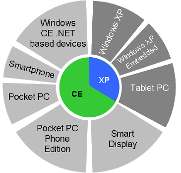
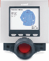

|
|
| The "Introduction to Windows Embedded" quick reference guide |
(Updated May 2, 2005)
"Microsoft's mission in [the] thriving embedded market is to deliver adaptable and scalable platforms for 32-bit, connected devices that enable rich applications and services. To this end, a dedicated group with strong executive sponsorship was formed at Microsoft to support the research and development of the Windows Embedded family of products as well as the internal and external customers who use them. The strategy of the Embedded Devices Group (EDG) has been to deliver the best software building blocks and tools to enable those rich devices and device experiences; invest in selected, go-to-market solutions such as the Pocket PC and Windows CE for Automotive; and enable users to take advantage of rich applications and services through support for .NET." -- Excerpt from Microsoft's Windows Embedded overview page
This WindowsForDevices.com quick reference guide is the perfect place to begin learning about Microsoft's Windows Embedded offerings. It provides an introduction and overview of Microsoft's Windows Embedded strategy, platforms, and tools. It serves as a handy reference -- with pointers to backgrounders, whitepapers, presentations, product info, and examples of successful Windows-powered devices -- that will help you get up-to-speed quickly on developing Windows Embedded based systems and devices. Additionally, three discussion forums provide a place where you can ask -- and answer -- questions about technologies and solutions for Windows Embedded based systems and devices.
Please note: This guide will be updated frequently, so check back periodically for the latest info. Also, if you have suggestions of other articles to include in this guide, please contact us with that information -- thanks!

Overview of Microsoft's mobile and embedded offerings
(from the article of the same name, below)
Background information
- Microsoft's Embedded Technology Creates Opportunities for Smart, Connected, and Digital Devices -- Jan. 28, 2004 -- This interview with Scott Horn, director of marketing for Microsoft's Embedded Devices Group, provides a sense of Microsoft's roadmap for embedded devices. Horn defines what Microsoft means by "embedded devices," sheds light on the goals and strategy of the Embedded Devices Group, discusses trends and opportunites in the embedded devices industry, and offers a glimpse of where Microsoft's embedded activities may be headed in the future.
- Introduction to Microsoft's Windows Embedded products and strategies -- Oct. 30, 2003 -- Scott Horn, director of marketing for the Microsoft Embedded Devices Group, gave a talk which provided an excellent overview and introduction to Microsoft's Windows Embedded products and strategies, as part of the October 2003 "Silicon Valley Speaker Series" at Microsoft's Mountain View, Calif. campus. Horn's talk gives a glimpse of Microsoft's perspective on current trends in embedded systems, and explains Microsoft's embedded market and product strategy and business model relating to the development of smart, connected devices in industries such as consumer electronics, commercial (especially retail POS), mobile, and networking. (The link, above, provides access to the presentation slides as well as the full transcript of Horn's talk.)
- Windows Embedded Family Introduction -- Oct. 13, 2003 -- This 17 page Microsoft whitepaper introduces the products that comprise the Windows Embedded family of operating systems: Microsoft Windows CE and Windows XP Embedded. It chronicles the history of the Windows Embedded family and Microsoft's commitment to the embedded market, and details the benefits of using Windows Embedded operating system software for your embedded devices. (356KB Word file download)
- An overview of Microsoft's mobile and embedded offerings -- Aug. 21, 2003 -- This article by Jonathan Wells, Product Manager for the Microsoft .NET Compact Framework, provides a quick introduction to Microsoft's mobile and embedded software offerings. The article includes several charts illustrating the range of Microsoft's mobile and embedded platforms, development tools, programming languages and frameworks, and device-oriented web services offerings, and also provides numerous links to further information.
- Choosing between Windows CE and Windows XP Embedded -- Aug. 13, 2003 -- Which is best for your application -- Windows CE or Windows XP Embedded? Microsoft has published a whitepaper to assist developers in answering that question. The paper begins with an overview of each of the two Windows Embedded OSes, and then presents a variety of factors and decision criteria in areas such as OS features, development tools, support for the .NET Framework (and Compact Framework) and Web services, and the type of device or application being developed.
- A detailed comparison of Windows CE and Pocket PC features and functions -- Sep. 22, 2003 -- Ever wonder what the difference is between Windows CE and Pocket PC? If so, this 32-page Microsoft whitepaper is just what you've been looking for. It compares the main features of Windows CE 4.2, Pocket PC 2002, and Windows Mobile 2003 software for Pocket PC. It tabulates the commonalities and differences between the platforms, and explains the roles each play in Microsoft's ongoing mobile and embedded device strategies.
Windows Embedded Product info
- The Windows Embedded family of operating systems -- This page is the Microsoft embedded group's microsite on WindowsForDevices.com. It includes a brief overview of Microsoft's embedded operating system platforms and resources, and links to a broad range of Windows Embedded software components and tools.
- Microsoft Windows Mobile products -- This page is the Microsoft mobile devices group's microsite on WindowsForDevices.com. It includes a brief overview of Microsoft's Windows Mobile software platforms, and provides links to various Windows Mobile software components and tools.
- Microsoft .NET Compact Framework, and Microsoft Visual Studio .NET -- -- This page is the Microsoft's development tools microsite on WindowsForDevices.com. It gives a brief overview of Microsoft's Visual Studio .NET and the .NET Compact Framework, and provides links to various tools and languanges for Windows Embedded development.
Info on Microsoft's Windows Embedded "Device Platforms"
Microsoft has identified a set of strategic device applications for its Windows Embedded platforms and technologies. The following list includes Microsoft's brief description of each device category, and provides links to Microsoft's related offerings: - Gateways -- Gateways are increasingly used in homes and businesses to connect a variety of IP-based devices, allowing users to share information across networks while providing always-on dedicated security and network protection services.
- Instrumentation and Industrial Automation -- Read about the use of Windows Embedded operating systems with instrumentation and industrial automation devices, example devices and find case studies.
- Windows Mobile and Windows Embedded Devices -- The Mobile and Embedded Devices (MED) group at Microsoft is responsible for developing and marketing a number of Microsoft's device products. Read an overview of MED.
- Kiosk/ATM Operating System Platforms -- Kiosks are increasingly used by a wide range of retail, hospitality, and financial institutions to provide more convenient access to information, accelerate self-service transactions, and reduce the cost of customer service delivery.
- Medical Device and System Design by Windows Embedded Operating System Platforms -- As the healthcare industry increasingly demands more intelligent and reliable systems, the Windows Embedded family of operating systems provides the dependability it needs.
- Networked Consumer Electronics -- Smart and connected consumer electronic devices enhance and extend digital media experiences inside the home. See how Windows CE 5.0 is used to build the next generation of networked consumer electronics such as Digital Media Receivers, network DVD players or recorders, or networked TVs.
- Point of Service Terminals -- Point-of-service terminals are used by a wide range of retail and hospitality companies to process and record purchase transactions and enable real-time reporting of sales and inventory data.
- Projectors and Large Screen Displays -- Windows Embedded is a platform for projectors and large screen displays, for the office and for the home, which provides display manufacturers the opportunity to enhance and differentiate their products from their competition.
- Set-Top Boxes -- Set-top boxes are used in a variety of scenarios—from traditional broadcasting to Internet Protocol one, as part of a service or as a stand alone device. Windows CE 5.0 provides flexible, advanced features and applications to suit each of these scenarios.
- Specialized Servers -- Microsoft Windows Powered specialized servers are function-specific servers that provide an excellent means to increase network capacity, reliability and performance, while reducing the complexity and cost of managing a growing network.
- Thin Client Devices -- Thin clients are key components in server-based computing solutions where line-of-business (LOB) applications are deployed by using the terminal services functionality in the Microsoft Windows Server family or by using Web-based services.
- VoIP Devices -- Voice over Internet Protocol (VoIP) is rapidly becoming the new standard for voice communication that leverages the ubiquity of IP-based networks. Get an overview of the Windows CE 5.0 VoIP device platform.
- Windows Automotive -- Read about Windows Embedded and Windows Automotive. Drivers and passengers can now experience Microsoft technology in 25 preinstalled and aftermarket devices from 13 world-class automakers and suppliers including Acura, BMW, Citroën, Clarion Co. Ltd., DaimlerChrysler, Fiat, Subaru, Honda, Hyundai, Mitsubishi, NexTech, Toyota, and Volvo.
Windows Embedded "hot topics"
"Cool Devices" Quick Reference Guide
And be sure to visit WindowsForDevices.com's popular Windows Embedded "Cool Devices" Quick Reference Guide! This guide provides a summary of some of the many Windows Embedded devices that have been disclosed publicly. New devices based on Windows Embedded technologies (including Windows CE, Windows XP Embedded, and Windows Mobile) are added continually.

"Cool Devices" Quick Reference Guide
The guide includes sections on . . .
Questions? Visit our discussion forums . . .
 |
|
|
|
|
|
|
|
 Use of this site is governed by our
Terms of Use
and Privacy Policy.
Except where otherwise specified, the contents of this site are copyright © 1999-2005
Ziff Davis Publishing Holdings Inc.
All Rights Reserved. Reproduction in whole or in part without permission is prohibited. Windows is a trademark or registered trademark of Microsoft Corporation in the United States and/or other countries and is used by WindowsForDevices under license from owner. All other marks are the property of their respective owners. WindowsForDevices is an independent publication not affiliated with Microsoft Corporation.
Use of this site is governed by our
Terms of Use
and Privacy Policy.
Except where otherwise specified, the contents of this site are copyright © 1999-2005
Ziff Davis Publishing Holdings Inc.
All Rights Reserved. Reproduction in whole or in part without permission is prohibited. Windows is a trademark or registered trademark of Microsoft Corporation in the United States and/or other countries and is used by WindowsForDevices under license from owner. All other marks are the property of their respective owners. WindowsForDevices is an independent publication not affiliated with Microsoft Corporation. 2005
market survey
2005
market survey


 news feed
news feed